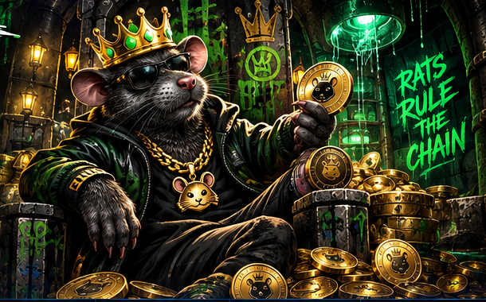

01 / FEATURED PROJECTLAUNCHED

HOODRAT $HOODRAT
A character-driven, community-focused cryptocurrency project in the Robinhood Chain ecosystem.
ROBINHOOD CHAIN● LIVE
 NIGHT FANTOM PROJECTS
NIGHT FANTOM PROJECTSFrom original digital assets to next-generation decentralized infrastructure. We research, build, and bring ambitious ideas on-chain.
Night Fantom Projects is an independent development studio exploring the intersection of blockchain technology, cryptocurrency, and digital communities.
Our work explores digital assets, creative ecosystems, and emerging technologies. We believe in building in public, communicating progress clearly, and giving each project its own identity.
We distinguish concepts, active development, and released products—because credibility starts with transparency.
Meet our launched project and stay tuned for future announcements.

A character-driven, community-focused cryptocurrency project in the Robinhood Chain ecosystem.
New ideas are taking shape behind the scenes. Project identities and details will be revealed through official announcements when they're ready.
Project descriptions and statuses are informational. No token listing, security audit, or technical capability is implied unless explicitly confirmed.
Our interests and areas of exploration.
Building and maintaining digital asset projects with distinct identities and communities.
Exploring decentralized systems and the technologies that support them.
Developing project experiences that encourage participation and open communication.
Evaluating emerging Web3 ideas before making any public project announcements.
Development updates, milestones, and project announcements will appear here as they are published. Follow the official GitHub account for public code and repository activity.
View GitHub ↗Interested in our work, potential collaboration, or following project development?
BitcoinTalk currently links to the forum homepage until a direct profile URL is supplied.